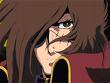

Forums galactiques > Taverne galactique : lieu de discussion informel > Le p'tit bar du coin
Pages : 1 2 ... 20 21 22 23 24
| Talia Réputation à la taverne : 34  24/08 ETU 19:26 | Score : 0 Détails Une fois qu'Herdès fut partis, Talia se leva de sa chaise et prit la direction de la porte. En même temps qu'elle passait devant Telpa, elle lui chuchota pour que Karadoc n'entende pas.
Désolé, mais il faut le comprendre et puis j'aime bien qu'il réagisse comme ça de temps en temps, ça remet les pendules à l'heure Ensuite, elle sortit vagabonder dans la taverne et peut-être l'assemblée. | ||
| Ascheriit Réputation à la taverne : 66  24/08 ETU 20:39  | Score : 5 Détails La porte du bar s'entrouvrit laissant passer un jeune homme à la silhouette élancée. Il portait un costume gris et était enroulé dans une cape de voyage mitée; ses cheveux brin mi-longs tombaient sur son oeil droit tentant Désespérément de cacher la blancheur inhabituelle de celui ci.
Le regard comme perdu dans ses rêves, les traits tirés de son visage ainsi que les cernes qui commençaient à se creuser sous ses yeux lui donnaient une allure presque pitoyable. Il partit s'asseoir au comptoir, après quelques secondes d'hésitation devant la porte d'entrée, traversant la salle en silence. Puis se laissant tomber Mollement sur un siège, il commanda une bière, sortit un paquet de cigarette de sa poche, s'arrêta net fixant sa drogue le regard toujours perdu. Puis comme réveillé par le barman lui amenant sa commande il alluma son plaisir éphémère et se surpris à fermer les yeux afin d'apprécier la douce et chaude quiétude d'un lieu de plaisir. | ||
| Le barbare Réputation à la taverne : 428  24/08 ETU 21:10 | Score : 3 Détails Ujio était dans la machine à café. Il venait de terminé son thé. Il décida de partir pour aller visiter la taverne qu’il connaissait finalement très mal. A près un moment passé à la parcourir il vit une petite porte au fond à gauche. La porte était en bois de chêne vernit d’une couleur grisâtre qui laissait penser qu’elle était plutôt vieille. Ujio pensa au nombre de commandant que cette vieille porte avait du voir passer, bourré, au bord du coma…
Il rentra et vit une salle plutôt grande comparé à la taille de la porte. De nombreux commandant étaient présents. Cela le changeait de l’eternel machine à café ou il ne voyait finalement pas grand monde. Au moins cela lui laissait le temps de pensé tranquillement sans que personne ne vienne le déranger. Il entendit dans un lège fond sonore une musique d’un groupe qu’il avait déjà entendu sur sa capitale. C’était la nouvelle mode en vue des jeunes enfants écervelé. Il put lire sur une petite télé qui lui faisait face le nom de Tokio Hotel… Il alla vers le bar et demanda au barman un diabolo grenadine. Une fois l’avoir prit il regarda un homme qui était au bar. Il avait les cheveux mit long et une couleur de cheveux magnifique. Cela devait être sa couleur naturel malgré la forte luminosité qui recouvrait celle-ci. Il cessa de le regarder pour ne pas qu’il attire l’attention sur ce vieux samouraï. Il se massa les cotes. Des rhumatismes venaient de temps en temps. Cette douleur folle qui n’était présent que quelque secondes mais qui passait pour une éternité tellement l’intensité était élevé. Après un moment il passa devant des tables ou de jeunes commandant riait et buvait et alla s’asseoir dans la pénombre au fond du petit bar. Ujio n’aimait pas se faire remarquer et il aimait surtout regarder les gens et imaginer ce qu’il pense au plus profond deux comme si leur yeux était le petit pont qui le séparait de la grande ville. Il continua à regarder l’homme, suivit ces faits et gestes. Il but une gorgé de son diabolo. | ||
| Sarah Réputation à la taverne : 162  24/08 ETU 21:44 | Score : 2 Détails
Sarah échoua, plus qu'elle n'entra, dans la taverne. Elle était fatiguée et triste. Tellement fatiguée ! Elle s'accouda au comptoir et commanda un verre, sans un regard pour quiconque. Pourtant, ce soir, elle avait besoin de la présence rassurante de ses congénères. De leur présence, c'est tout ! Elle savoura le bruit, le bourdonnement des voix, la fumée, la chaleur, la lumière. Que lui arrivait-il ? Sûrement la fatigue ! La fatigue et une sourde angoisse qu'elle ne définissait pas. Elle était tapie, là, au fond, et attendrait son heure pour se révéler, sans doute... Quand elle leva la tête, elle se sentit confuse. Elle n'avait salué personne... ni ce jeune commandant qui lui touchait presque le coude et qu'elle avait aperçu dans la salle des présentations... un nouveau...il n'avait pas l'air en grande forme... ni le Commandant, plus loin dans un coin sombre, dont elle avait suivi les tribulations à l'Assemblée le jour même et dont elle avait apprécié la force et la sagesse. Mais ils avaient l'air de goûter leur solitude, d'apprécier ce moment de calme intérieur dans le bruit de la salle... et elle n'avait pas envie de parler. Elle finit son verre, les salua discrêtement du regard, et partit retrouver la rue et la protection de la nuit. | ||
| Adario Réputation à la taverne : 142  24/08 ETU 21:48 | Score : 1 Détails Adario cherché de quoi ce motiver avec les JO et, pas un curieux hasard, franchi la porte d'un bar fort chaleureux. Après avoir pris un astro-pastis, le jeune commandant partie à la recherche d'un fauteuil encore libre...
| ||
| Talia Réputation à la taverne : 34 24/08 ETU 21:59 | Score : 1 Détails Talia Trouvait les couloir assez calme à la taverne. Elle décida alors de retourner au bar en espérant trouver plus de monde afin de discuter un peu. A l'entrée de la bâtisse, elle aperçut La commandante Sarah qui l'avait bien si accueilli quand elle c'était présenté. Elle avait l'air en piteuse état. Talia alla finalement la voir afin qu'elle trouve du réconfort.
Bonjour. Vous n'avez pas l'air dans votre assiette. Puis-je rester à vos côtés ? | ||
| Luna Réputation à la taverne : 38  24/08 ETU 21:59 | Score : 1 Détails Luna qui se trouvais maintenant seule aperçut Adario. Elle l'appela et lui dit amicalement :
- Bonjour à vous cher amis! Que diriez vous de venir vous assoire à ma table et de bavarder un peu ? | ||
| Adario Réputation à la taverne : 142 24/08 ETU 22:11 | Score : 0 Détails C'est avec joie que j'accepte votre proposition chère Luna.
Comment allez-vous? Personnellement, je vient de trouver la raison de ma venu en ses lieux... | ||
| Luna Réputation à la taverne : 38 24/08 ETU 22:17 | Score : 0 Détails Vous me flatez... Pour ma part je vais très bien! J'ai même trouvez l'amour! Et vous comment c'est passé votre voyage ?
| ||
| Adario Réputation à la taverne : 142 24/08 ETU 22:21 | Score : 0 Détails Mon voyage fut très enrichissant et trop cour, comme toujours. Mais bon, je ne pouvais m'absenter plus longtemps, mon peuple à besoin de moi.
Quand vous parler d'amour, j'ose espérer que vous ne parlais pas du chien galeux que j'ai croiser mainte fois à l'AG... ou ce loups, je ne sait plus. Quoi qu'il en soit, vous mériter bien mieux. | ||
| Luna Réputation à la taverne : 38 24/08 ETU 22:28 | Score : 0 Détails - Nos peuple on toujours besoin de nous!
Et ne vous inquiéter pas je ne sort avec aucun chien galeux comme vous dites, gardez m'en bien! J'ai appris que vous participies aux JO ? Moi aussi, nous serons donc concurrent! | ||
| Ascheriit Réputation à la taverne : 66 24/08 ETU 23:38 | Score : 4 Détails Ascheriit commencait à regretter son ancienne vie de ferailleur miteux, ses carcasses rouillés, ses vieux modeles de poubelles spatiales qu'il vendait à d'autre marchand tout aussi perdu que lui. C'etait une bien triste epoque mais une epoque de calme relatif. Ensuite il y avait eu la guerre puis la prise de pouvoir et maintenant voila qu'il tient l'avenir de tout un peuple dans le moindre de ses mots...
il prit une profonde inspiration, suivit d'une gorgée de biere tout aussi profonde, puis continua de parcourir ses pensées Cela faisait assez peu de temps finallement qu'il avait toutes ces responsabilités mais ses nerfs commencaient à lacher et il perdait de son sang froid à mesure que les journées se succedaient. Peu etre n'etait-il pas fait pour etre assis sur le fauteuil de commandant. apres tout que connaissait-il de tout ça? pas grand chose. le visage fatigué il r'ouvrit enfin les yeux sortant de son voyage existentiel. Au bout d'un petit momment il remarqua enfin un visage familier. il salua le commandant sarah d'un geste de la main, puis commanda une deuxieme biere avant de s'allumer un autre de ses batonnets de drogue. Il ecoutait désormais les gens parler autour de lui. Peu etre y avait-il des gens vers qui se tourner à qui faire confiance ... mais comment faire confiance Dorénavant le peuple de chacun passait avant tout il en etait conscient | ||
| Dame Yuna Réputation à la taverne : 405  25/08 ETU 00:11 | Score : 1 Détails Yuna qui en avait marre d'écouter ses généraux lui exposer des tactiques militaires pour contrer les attaques sur leurs flottes stationnées en orbite de planètes reculées dans la galaxie et de voir de simulations de combats venait d’ouvrir la porte du bar
Elle semblait fatiguée, elle était fatiguée Elle se dirigea vers la première table vide qu'elle vu et commandas un thé glacé Le serveur lui amena sa commande et elle commença à siroter sont thé puis s’installer confortablement sur sa chaise et regarda le murs en fasse d'elle | ||
| Battosai Réputation à la taverne : 37  25/08 ETU 09:58 | Score : 0 Détails Battosai entra dans le bar.
-Barman je prendrais un petit whisky pour commencé la journée. -Oui monsieur je vous apporte ça tous de suite. -Merci Barman. Et il alla s'asseoir a une table en attendant que le barman lui aporte son whisky. | ||
| Le barbare Réputation à la taverne : 428 25/08 ETU 10:24 | Score : 2 Détails Ujio finit son diabolo cu sec… Certain aurait prit de la bière pour faire la même chose mais le samouraï n’avait jamais bu une seul goutte d’alcool et il ne le fera jamais. Beaucoup de monde avait rejoins le bar. Cet endroit était finalement très fréquenté. Cela le changeait vraiment de son petit café dans la petite salle de la machine…
Les gens aimait beaucoup boire cela se voyait mais cela les détendait aussi beaucoup. C’était peut être pour cela que cet endroit était si fréquenté. Une jeune femme était présente hier soir. Elle était d’une beauté rare et avait des yeux dont le vieux samouraï aimait ce plongé… Mais elle avait un air de gamine comme si elle pouvait encore tout voir avec une insouciance à toute épreuve. Elle l’émerveillait et il avait bien besoin de cela pour commencer une aussi dure journée. La nuit avait été dure et il avait bossé toute la nuit pour arriver à reprendre les systèmes qui était en cour d’attaque mais finalement ils avaient réussît et Ujio avait décidé d’aller reboire un vert avant d’aller dormir un peu. Un jeune homme entra soudain dans le bar. Il cliqua la porte un peu fort ce qui le fit sursauter. Il alla vers le bar et demanda un whisky avant d’aller s’asseoir à une table non loin de celle d’Ujio. Il avait l’air pensif et n’avait parlé à personne pendant son entré au bar. Le vieux bailla à s’en décrocher la mâchoire… Il regarda autour de lui. Il alla bientôt partir… | ||
| Necromanger's return Réputation à la taverne : 57  25/08 ETU 10:46 | Score : 1 Détails Cela faisait presque plus d'une heure que Sarah et lui discutaient autour d'un bon repas et de quelques verres. Dans leurs yeux brillaient la même lueur, celle que l'on retrouve lorsque l'on a terminé une histoire, et que nous pouvons trouver dans les regards des passants le bonheur et l'émerveillement.
"Sarah, ce repas fut divin en votre compagnie. Je propose de le terminer sur une note encore plus joyeuse. Barman! Une bouteille de champagne! Sarah, j'aimerai porter un toast pour mon entrée dans le monde des conteurs, et surtout pour me l'avoir fait décourvrir par vos histoires. -Voila votre champagne, et, j'en profite pour vous dire qu'il est offert par la maison, c'est pas tous les jours que l'on me demande d'en sortir, eheh! -Je vous remercie beaucoup, mais, je vous en prie, acceptez ce pourboire. -Oh mais il ne faut pas, c'est.. -Si si, j'y tiens, s'il vous plaît. -Eh bien! J'vais m'accorder 5 minutes de pause, ahahah! -Oui vous l'avez bien mérité." Necromanger se tourna vers Sarah et lui tendit une coupe. Ils trinquèrent pour la seconde fois et rièrent de bon coeur... | ||
| Sire Yugo Réputation à la taverne : 0  25/08 ETU 12:44 | Score : 0 Détails Une Biere pour tout le monde C'est ma tourné
| ||
| Necromanger's return Réputation à la taverne : 57 25/08 ETU 13:52 | Score : 0 Détails J'avoue cher ami, que si vous me prenez par les sentiments, alors je ne peux en aucune façon refuser cette offre ^^.
| ||
| Luna Réputation à la taverne : 38 25/08 ETU 15:46 | Score : 1 Détails Plus tard dans la soirée Luna était aller se reposer dans une chambre au dessus de la taverne.
Elle déscendit les marches et se dirigea vers la porte de sortit. Elle s'arrêta alors un moment, regarda la salle et lachat la poignée. Elle se dirigea finalement vers le bar, la mine maussade. Elle était encore fatiguée cela se voyait, mais plus que le fatigue on voyait aussi la tristesse sur son visage. Elle s'inquiètait visiblement. Elle commanda une bierre, qui n'était pas la boisson la plus convenable pour débuter la journée certes, et elle allat s'assoir dans un coin d'ombre, attendant sa commande. | ||
| Battosai Réputation à la taverne : 37 25/08 ETU 17:27 | Score : 0 Détails Battosai retourna au comptoir et commanda un autre whisky.
Le Barman lui apporta sa commande et Battosai commença a fixé un point sur le mur. Ensuite il regarda a l'interieur du bar. Il était presque désert. |
Pages : 1 2 ... 20 21 22 23 24
Forums galactiques > Taverne galactique : lieu de discussion informel > Le p'tit bar du coin